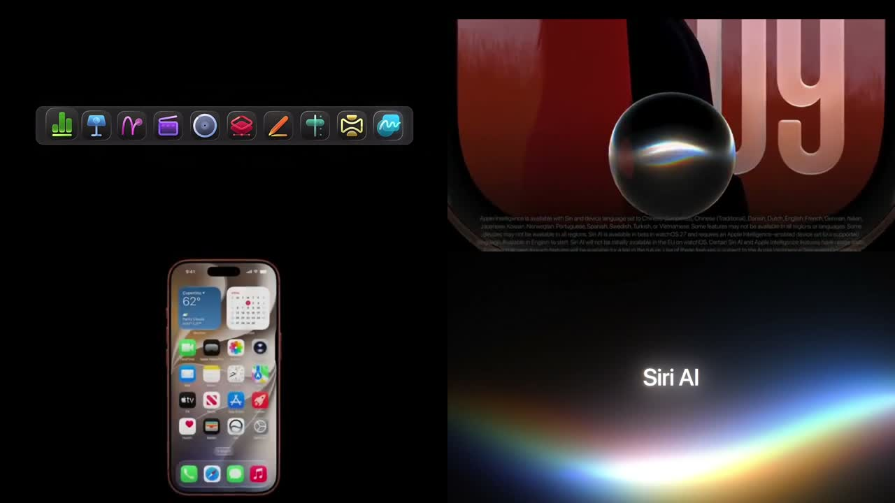
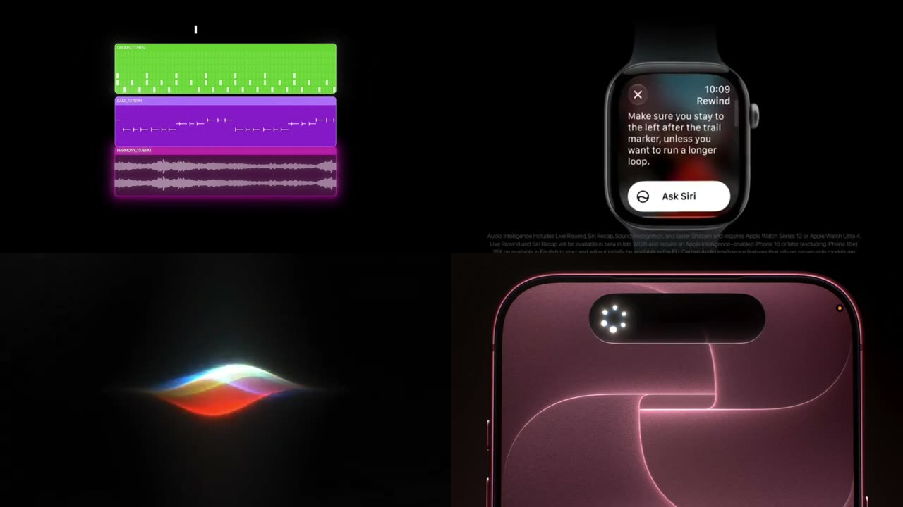
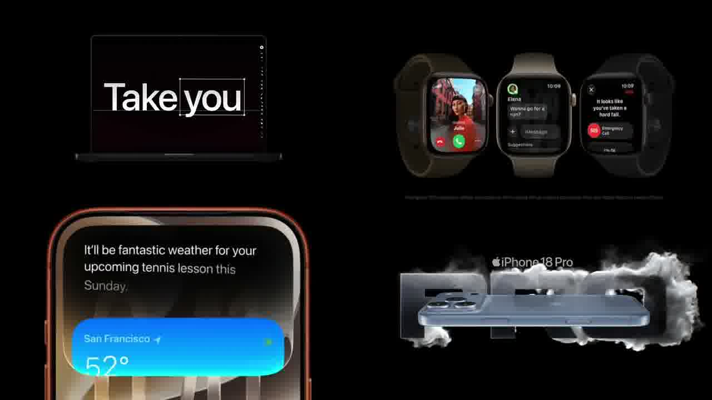

黑底 2×2。四段产品片同时播放。每格一件产品，其余留空。
9.3 秒、3840×2160、60fps。画面始终是黑底上的四格。没有标题叠在片子上，没有转场花字。四段 Apple 发布会镜头同时运行，用来对照同一套语法。
点其中一格会放大到满框（scale(2)，原点落在该角）。再点同一格，或打开「四分格」，回到 2×2。原片有声；自动播放默认静音。

这不是三维场景，也不是网页组件。原件是一条剪辑好的片子。本页用同一条片子做标本：第一屏就是它，可重播，可单格放大。
每格遵守同一条规则：一件产品或一句字，背景接近纯黑。颜色只出现在产品、UI 或那一条光谱上。格与格之间没有装饰分隔，黑底本身就是分隔。
一页之中强调元素不宜过多。这里的强调靠留白和对比，不靠把四件事塞进同一镜。


构图。一镜一个想法。空不是没做完，是把视觉权重留给中间那一件。
字体。全片同一套品牌字体。标题、UI、附注共用规则。
颜色。房间保持黑或白。响的颜色只在产品或界面上。不要亮色叠亮色。
转场。剪接点尽量不被看见。不要闪光、不要硬切把人拉出片子。
声音。音乐贴着剪辑走。音效只保留必要的一下，不和画面抢。
| 项目 | 取值 |
|---|---|
| 原片 | 3840×2160，60fps，9.33s，H.264 |
| 本页播放 | 1920×1080，约 3.0MB，循环 |
| 布局 | 2×2，16:9，背景 #000 |
| 单格放大 | transform: scale(2)，原点为该角，0.45s cubic-bezier(.2, .7, .2, 1) |
| 来源 | x.com/leomeethewoo/status/2098033411000828007 |
#stage1920×1080 循环播放。自动播放静音；「声音」打开后取消 mute。「重播」将 currentTime 置 0。#solotransform-origin 落在该角，scale(2)，0.45s cubic-bezier(.2, .7, .2, 1)。容器 overflow: hidden。再点同一格或打开「四分格」回到全图。reduced-motion 下无过渡。